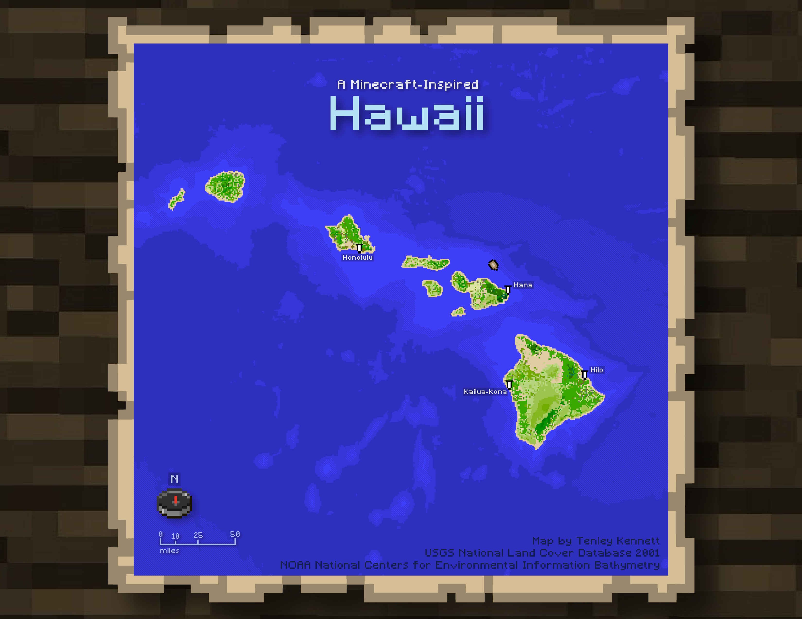

I love creating maps of my Minecraft worlds, so I had the idea to create a Minecraft style map of my world.
I wanted to map an island landscape so I could play with bathymetric symbology, and Hawaii was a great fit. I used tools like Zonal Statistics, Focal Statistics, and Reclassify to simplify the terrain, then spent some time finding a color palette that lent itself to the game's style.